Imports
Dossier temporaire pour deposer les fichiers bruts avant analyse et tri.
Regles d'usage :
- ne pas renommer ni supprimer les fichiers a l'import ;
- ne rien masquer sous
imports/dans Git, meme les metadonnees systeme ; - garder ici les medias non classes ;
- apres inventaire, deplacer les fichiers valides vers
media/


 ,
, assets/


 ou
ou archives/.png.webp)
.png.webp)
.png.webp)
.png.webp)

 selon leur nature ;
selon leur nature ; - documenter les fichiers ambigus avant decision.


.png)
.png)
.png)
.png)


Lot 2026-07-06 - Desktop BZH
Source copiee en lecture seule depuis C:\Users\pierr\Desktop\BZH vers imports/2026-07-06-desktop-bzh/.
Analyse courte :
- 1 657 fichiers, 133 dossiers, 2 408,4 Mo ;
- 231 fichiers deja presents dans
assets/, media/ ou archives/ ; - 1 426 fichiers nouveaux, soit 2 135,34 Mo ;
- 160 videos referencees uniquement par chemin et taille, sans analyse de contenu ;
- un fichier video depasse 100 Mo et demande une decision Git LFS ou archive externe avant commit.
Rapport detaille : archives/import-reports/2026-07-06-desktop-bzh.md. Index videos reference-only : archives/import-reports/2026-07-06-desktop-bzh-videos.csv.
Sous-lot TCG traite :
- 185 nouveaux PNG classes dans
assets/cards/ ; - 1 source
.pdnconservee dansarchives/sources/tcg/; - 1 doublon exact ignore car deja present dans
assets/cards/bzh01/ ; - dossier source
BZH_TCG_Images/retire du sas local apres classement.
Sous-lot audio traite :
- 24 fichiers audio classes dans
media/audio/; - 16 pistes dans
media/audio/tracks/; - 4 previews dans
media/audio/previews/site-song/; - 4 masters WAV dans
media/audio/masters/; - aucun doublon exact detecte avant copie ;
- fichiers audio traites retires du sas local, en laissant les videos
BZH_RESS\Sonnon traitees.
Sous-lots audio Sniky / Dernier souffle traites :
- 22 fichiers MP3 classes dans
media/audio/tracks/; - 5 variantes
mmk sniky 2dansmedia/audio/tracks/sniky-the-frager-mix/; - 17 pistes et variantes Dernier souffle / Echo Vide / Fantome de Chair dans
media/audio/tracks/dernier-souffle/; - aucun doublon exact detecte avec l'audio deja classe ;
- dossiers sources
Sniky The Frager Mix/etDernier souffle/vides apres classement.
Nettoyage :
- les dossiers vides generes par le tri ont ete supprimes du sas local ;
- les elements restants ont ete traites lors de la passe finale du sas Desktop BZH.
Sous-lot LoL Team Stats traite :
- 360 fichiers archives dans
archives/web/lol-team-stats/raw/


 ;
; - lot mis de cote car il contient nos statistiques de jeu LoL ;
- aucun lien direct depuis le wiki ou la navigation publique du hub ;
- aucun doublon exact detecte avant copie ;
- dossier source
LOL_TEAM_STATS/retire du sas local apres verification bit a bit contre l'archive brute.
Sous-lots visuels courts traites :
- 42 visuels uniques classes dans
assets/logos/


 et
et media/visual/ ; - 13 references Hermine / BZH Power dans
media/visual/references/hermine-logos/
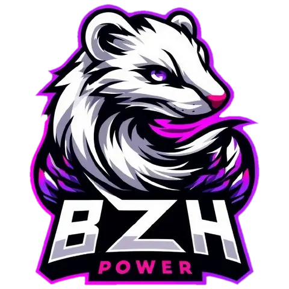
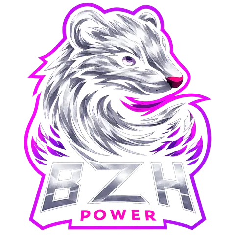
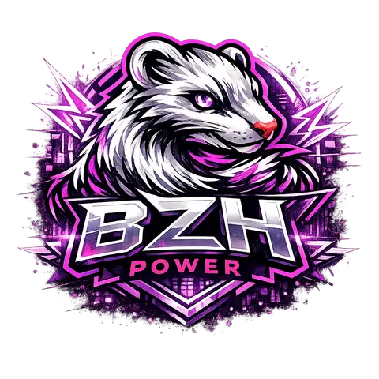
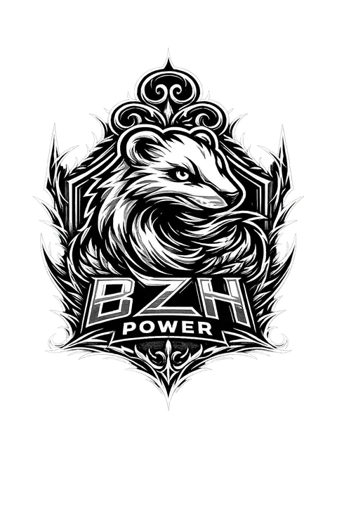
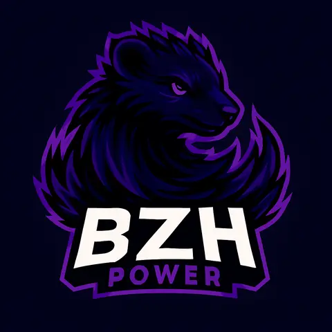
; - 4 references LEME dans
media/visual/references/leme/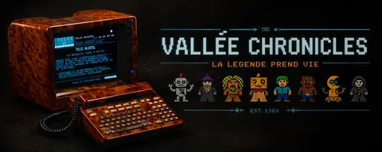

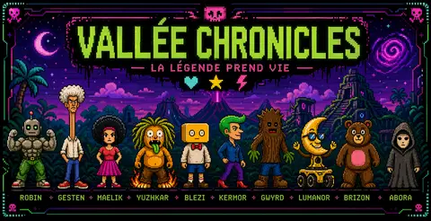
 ;
; - 5 covers RTT dans
media/visual/covers/rtt/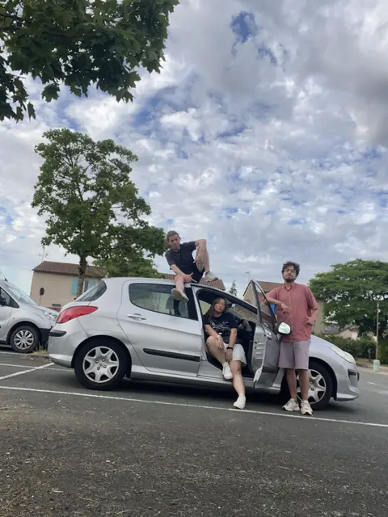
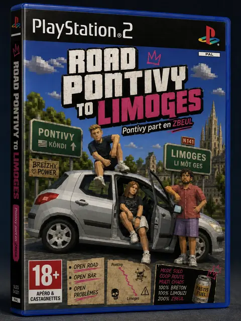
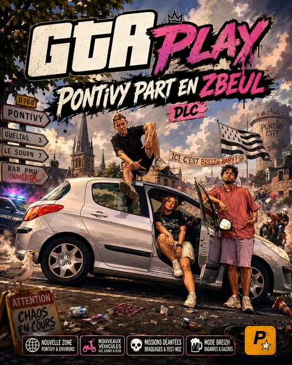
; - 16 visuels album WIP / BZH Jazzy dans
media/visual/covers/ ; - 4 visuels racine classes en logo, cover ou merch ;
- 4 copies doublons exactes conservees dans
archives/import-duplicates/2026-07-06-desktop-bzh/ ;
; - 2 metadonnees Windows conservees dans
archives/import-metadata/2026-07-06/imports/2026-07-06-desktop-bzh/.


Sous-lot BZH Chronicles traite :
- 151 fichiers examines, sans video ;
- 25 cartes legacy classees dans
assets/cards/legacy/old-card/.png.webp)
.png.webp)
.png.webp)
.png.webp)
.png.webp)
.png.webp) ;
; - 2 references visuelles classees dans
media/visual/references/


 ;
; - 1 source Paint.NET conservee dans
archives/sources/webtoon/; - 5 copies doublons exactes internes conservees dans
archives/import-duplicates/2026-07-06-desktop-bzh/BZH_CHRONICLES/ ; - 2 metadonnees Windows conservees dans
archives/import-metadata/2026-07-06/imports/2026-07-06-desktop-bzh/BZH_CHRONICLES/; - 116 doublons exacts deja suivis indexes dans
archives/import-reports/2026-07-06-desktop-bzh-bzh-chronicles-duplicates.csv, puis retires du sas final.
.png)
.png)
.png)
.png)
.png)
.png)


Sous-lot BZH_RESS visuels courts traite :
- perimetre :
emote/,sticker/,poster/,wallpaper/hors video,chibiii plush/,chronicles_profil/,gpt_soirée_trio/; - 66 contenus promus vers
media/visual/ ou archives/html/; - 4 copies doublons exactes internes conservees dans
archives/import-duplicates/2026-07-06-desktop-bzh/BZH_RESS/


.webp.webp) ;
; - 4 metadonnees Windows conservees dans
archives/import-metadata/2026-07-06/imports/2026-07-06-desktop-bzh/BZH_RESS/; - 7 doublons exacts deja suivis indexes dans
archives/import-reports/2026-07-06-desktop-bzh-bzh-ress-visuals-duplicates.csv, puis retires du sas final ; - mapping source/destination conserve dans
archives/import-reports/2026-07-06-desktop-bzh-bzh-ress-visuals-moves.csv.


.webp)
Racine BZH_RESS traitee :
- 8 fichiers nouveaux classes : 5 visuels, 2 documents, 1 CSV de metadata ;
- 4 doublons exacts deja suivis indexes dans
archives/import-reports/2026-07-06-desktop-bzh-bzh-ress-root-duplicates.csv, puis retires du sas final ; - mapping source/destination conserve dans
archives/import-reports/2026-07-06-desktop-bzh-bzh-ress-root-moves.csv; tmp1uphl2jq.mp4reste reference dans l'index video reference-only, mais n'est plus present dans le sas local au controle de reprise du 2026-07-08.
Sous-lot BZH_RESS Montage images traite :
- 42 images fixes classees dans
media/visual/references/ ; - 1 copie doublon exacte interne conservee dans
archives/import-duplicates/2026-07-06-desktop-bzh/BZH_RESS/Montage/ ; - mapping source/destination conserve dans
archives/import-reports/2026-07-06-desktop-bzh-bzh-ress-montage-moves.csv; - 136 videos
.mp4sont conservees dans l'index video reference-only ; le dossierMontage/n'est plus present dans le sas local au controle de publication du 2026-07-08.
Sous-lot bzhpwimage petits lots traite :
- 17 visuels classes dans
media/visual/ ; - 1 doublon exact deja suivi indexe dans
archives/import-reports/2026-07-06-desktop-bzh-bzhpwimage-small-duplicates.csv, puis retire du sas final ; - mapping source/destination conserve dans
archives/import-reports/2026-07-06-desktop-bzh-bzhpwimage-small-moves.csv.
Sous-lot bzhpwimage logos traite :
- 173 visuels logo classes dans
assets/logos/bzh-chronicles/ ;
; - 1 source Paint.NET conservee dans
archives/sources/logos/bzh-chronicles/; - 2 doublons exacts deja suivis indexes dans
archives/import-reports/2026-07-06-desktop-bzh-bzhpwimage-logo-duplicates.csv, puis retires du sas final ; - mapping source/destination conserve dans
archives/import-reports/2026-07-06-desktop-bzh-bzhpwimage-logo-moves.csv.

Sous-lot bzhpwimage immmaaageg traite :
- 42 references visuelles classees dans
media/visual/references/immmaaageg/


 ;
; - 1 source Paint.NET conservee dans
archives/sources/bzhpwimage/; - 1 copie doublon exacte interne conservee dans
archives/import-duplicates/2026-07-06-desktop-bzh/BZH_RESS/bzhpwimage/immmaaageg/ ; - 3 doublons exacts deja suivis indexes dans
archives/import-reports/2026-07-06-desktop-bzh-bzhpwimage-immmaaageg-duplicates.csv, puis retires du sas final ; - mapping source/destination conserve dans
archives/import-reports/2026-07-06-desktop-bzh-bzhpwimage-immmaaageg-moves.csv.


Sous-lot bzhpwimage artwork traite :
- 204 visuels classes dans
media/visual/ ; - 1 source Paint.NET conservee dans
archives/sources/bzhpwimage/; - 1 raccourci Windows conserve dans
archives/import-metadata/2026-07-06/imports/2026-07-06-desktop-bzh/BZH_RESS/bzhpwimage/bzh_pw_artwork/; - 3 copies doublons exactes internes conservees dans
archives/import-duplicates/2026-07-06-desktop-bzh/BZH_RESS/bzhpwimage/bzh_pw_artwork/ ; - 8 doublons exacts deja suivis indexes dans
archives/import-reports/2026-07-06-desktop-bzh-bzhpwimage-artwork-duplicates.csv, puis retires du sas final ; - mapping source/destination conserve dans
archives/import-reports/2026-07-06-desktop-bzh-bzhpwimage-artwork-moves.csv; - 3 videos
.mp4promues comme references video dansmedia/video/references/desktop-bzh/bzh-pw-wallpaper-aligax/.
Traitement final des 520 fichiers residuels :
LOL_TEAM_STATS/: 360 fichiers retires du sas apres verification bit a bit contrearchives/web/lol-team-stats/raw/ ;BZH_CHRONICLES/: 116 fichiers retires du sas apres confirmation comme doublons deja suivis ;BZH_RESS/: 25 fichiers non video retires du sas apres confirmation comme doublons deja suivis ;BZH_RESS/: 19 videos.mp4promues dansmedia/video/references/desktop-bzh/, sans analyse de contenu ;- mapping videos conserve dans
archives/import-reports/2026-07-06-desktop-bzh-video-promotions.csv; - synthese finale conservee dans
archives/import-reports/2026-07-06-desktop-bzh-sas-residuals.csv.
Lot 2026-07-15 - Lemegeton sprite pack et images racine
Source traitee : imports/lemegeton_chronicles_fm_sprite_pack/.
Classement realise :
- 202 assets personnage classes dans
assets/characters/lemegeton/


 ;
; - 6 inspirations uniques classees dans
media/visual/references/lemegeton-inspiration/


 ;
; - 4 concepts classes dans
media/visual/references/lemegeton-sprite-pack/concepts/


 ;
; - 68 fichiers de preview conserves dans
archives/web/lemegeton-sprite-preview/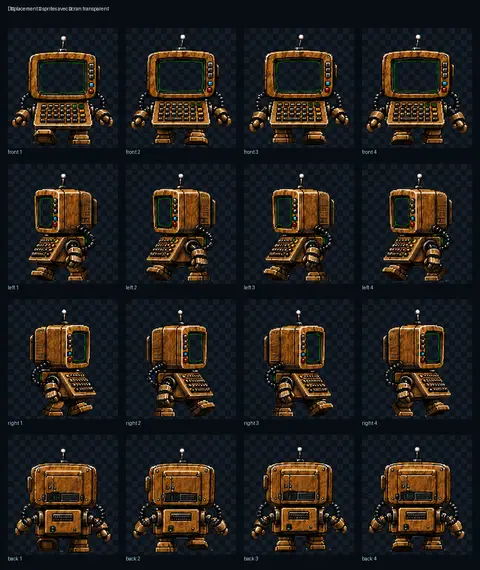
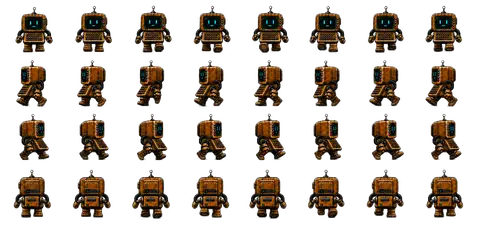
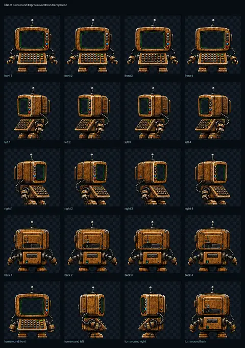
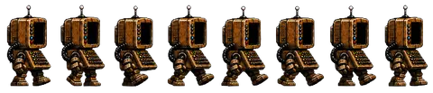
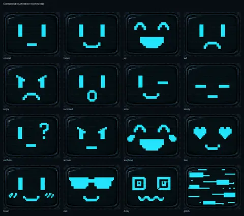
 ;
; - 5 fichiers du tuner local conserves dans
archives/web/lemegeton-animation-tuner/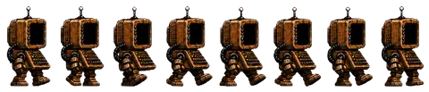
; - 9 sources anciennes ou generatives conservees dans
archives/sources/lemegeton-sprite-pack/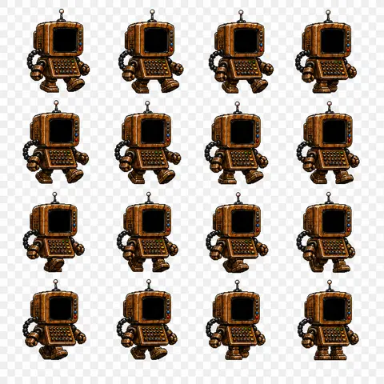
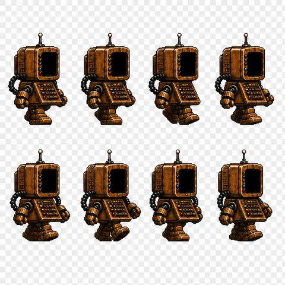
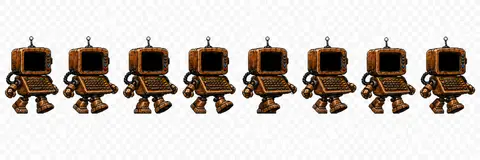
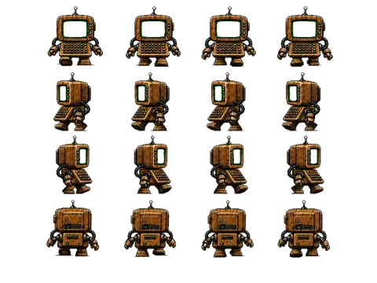
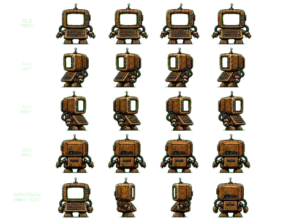
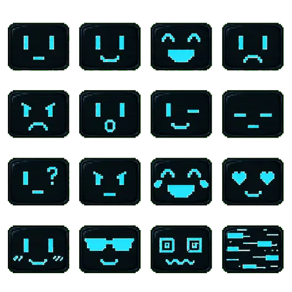
; - 4 doublons exacts LEME archives dans
archives/import-duplicates/2026-07-15-lemegeton-sprite-pack/
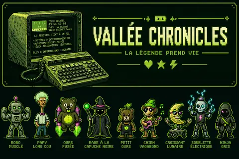

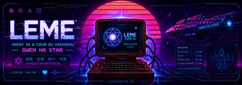
; - 4 images racine du sas classees en reference TCG, reference Sorn ou doublon d'import.


Rapport detaille : archives/import-reports/2026-07-15-lemegeton-sprite-pack.md. Index des doublons : archives/import-reports/2026-07-15-import-duplicates.csv.